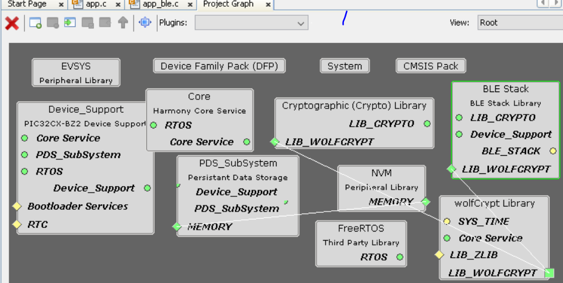

Getting Started with Peripheral Building Blocks
FreeRTOS and BLE Stack Setup --> -->Adding UART Legacy Advertisements(sleep)
Introduction
This document will help users create a new MCC Harmony project, configure FreeRTOS component and BLE stack component in the project, generate code using the MPLAB Code Configurator
These examples each build on top on one and other. We strongly recommend that you follow the examples in order, to learn the basics concepts before progressing to the more advanced topics.
Recommended Reads
Hardware Required
None
Software Setup
Steps to Init BLE Stack
This section explains the steps required by a user to develop this application example from scratch using MPLABx Code Configurator
Tip: New users of MPLAB Code Configurator are recommended to go through the overview.
- 1.
Create a new MCC Harmony Project -- link for instructions
- 2.
Open MPLAB Code Configurator

Default MPLAB Code Configurator window

- 3.
In Available component window, expand Wireless > BLE and click plus symbol the BLE stack component on to the project graph

- 4.
Upon BLE Stack being added to project graph, the different component dependencies will be requested to be added. User has to select "yes" to add the dependant component
- 5.
Activate the components, select "yes"

- 6.Verify Project Graph
 - 7.
Display FreeRTOS component configuration options by Selecting the component in Project Graph. Configure FreeRTOS component to the following. The configuration chosen here should suit most application needs, users are recommended to follow the FreeRTOS Customization documented here to meet their needs Tip: Upon selecting any component the default configuration options available for user are displayed
Figure 1. . Figure 2. .
Figure 2. . - 8.
Display BLE Stack component configuration options by Selecting the component in Project Graph.
Default Configuration: Peripheral Device functionality is enabled by default.
- 9.
- 10.
Switch to IDE window, right click on project and open Project Properties
- 11.
Ensure correct compiler version as suggested inGetting Started with Software Development is chosen
- 12.
Build Project, upon building project user action is required as mentioned here
- 13.
Build Project. The project will compile successfully.